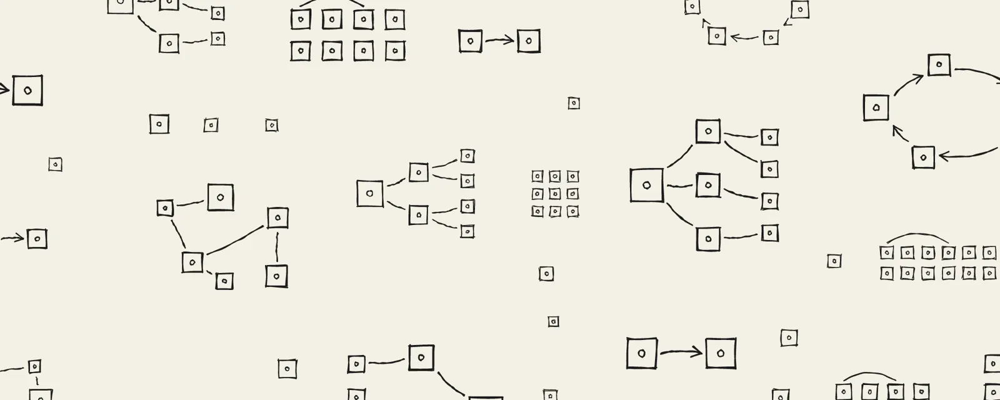

互动数据（2026-10-27 12:16 UTC+8，经 X API 读取）：约 40 万次浏览、3,269 赞、356 转帖、63 引用、144 回复、6,629 收藏。作者在该帖下没有补充回复。
原帖
软件工程师将不得不攻克一组新问题，才能释放强大的多智能体系统去解决世界上最难的问题——现在是历史上做工程师最有意思的时刻之一。
software engineers are going to have to tackle a new set of problems to unlock powerful multiagent systems to solve the world's hardest problems - right now is one of the most interesting moments in history to be an engineer.
全文中译：《工程师要解决的一组新问题》
英文原题 The new set of problems for engineers to solve。以下为作者本人 X Article 的完整中文翻译。
很多软件工程师正在经历一场只能称之为“身份危机”的东西。这份工作已经变了很多。有人很沮丧，也有人正过着人生中最快乐的日子。我看到一件很具体的事正在发生，它让我对未来——就说一两年吧——的工程工作非常兴奋：除非软件工程师把那些让它成为可能的问题解决掉，否则 AI 就无法创造出它本可以创造的惊人成果。这关乎存亡，而说实话这也非常有趣，所以现在做软件工程师是一个相当了不起的时刻。
多智能体系统正在制造这些问题
智能体最初只是简单的、人在回路中的聊天。后来模型越来越擅长在更难的问题上运行更长时间，智能体系统开始搬到云端。与此同时，模型也越来越擅长彼此协作，人们搭起了基础的多智能体系统：比如一个编排者为某个任务派生几个子智能体，或者给智能体分配执行之外的工作来改善结果，比如打分、提建议或者“做梦”。
现在，一些人开始构建真正惊人的多智能体系统，去攻克世界上最难、最重要的问题，比如严肃的科研、发现和硬件设计。想象一下成千上万个智能体，持续不断地朝这些目标工作。随之而来的是一组新的软件工程问题，我们已经看到它们冒头了。
基础设施需要演进，以应对更突发的负载。我们需要恰当的认证和授权来识别智能体、让它们协同工作、使它们能做该做的事，并阻止它们做不该做的事。对不可信的代码和内容来说，安全和恰当的隔离至关重要。我们还必须有监控，以及在系统偏离方向时让它当场停下的能力。
模型会继续变强，这类多智能体系统会变得非常强大。但如果我们想真正释放这种力量，让世界信任它去创造好的结果——比如治愈疾病——而不是坏的结果，软件工程师就必须解决所有这些问题。
问题清单
基础设施需要演进
软件行业一直构建在 Kubernetes 之上，而它是为无状态、多副本的应用，或者稳定编号的有状态 Pod 集合设计的。智能体完全不同。它们本质上是隔离的、有状态的、单实例的工作负载。在一段段工作之间，它们可能空闲任意长的时间，而且会花大量时间等待工具、模型推理、其他智能体或人类输入。有些负载需要快速启动，有些需要避免浪费算力，有些则需要疯狂的规模。很多出色的工程师正在这个问题空间里全力推进——比如在做新文件系统和沙箱产品的 AI 基础设施公司，还有打造了新运行时 Agent Substrate 的 Google 团队。还有大量问题有待搞清楚。
身份与访问
智能体认证（authentication）有问题要解决——识别出是哪个智能体执行了某个动作。这个领域的好处是可以借用微服务世界里已经造好、经过打磨的积木，比如用短期证书而不是静态密钥的工作负载身份（workload identity），大家正开始把这些概念用到智能体上。
智能体授权（authorization）作为一个问题空间则开放得多——你允许智能体做什么？许多智能体代表某个人类工作，用这个人的身份和凭证访问各种系统、执行操作。这里已经有一个问题：如何识别出执行动作的是智能体而不是那个人本身。但这种“代表他人”（on-behalf-of，OBO）的模式里还有更深的问题，比如同意（consent）。如果多智能体系统要连续工作几周，人类如何有意义地批准自己的智能体能做什么？智能体平台的一些功能，比如工具调用自动批准，会有帮助，但要在大规模下把这件事做对，还需要更深层的权限设计。再往后，还有以自己的身份工作的智能体——这更是远未解决——以及如何把它应用到智能体之间的协作上：一个智能体如何信任另一个向它提出请求的智能体？
安全与隔离
过去几个月，尤其是最近几周，我们看到漏洞涌现的速度超过了行业打补丁的速度，其中很多在许多系统所依赖的关键核心软件里。现在想象成千上万个持久运行的智能体跑在这些核心软件之上，编写不可信的代码、读取不可信的内容。在那样的世界里，那些未修补的漏洞会危险得多。软件工程师最重要的事情之一，就是在如何加固这些软件——内核、浏览器、运行时和常用库——上发挥创造力。
多智能体系统又多了一层变数。一个被攻陷的智能体可能把注入的指令传给与它协作的其他智能体，这些指令还可能进入记忆，被未来的智能体误以为可信。爆炸半径变得很现实——第一个智能体被攻陷时，整个多智能体系统有多大比例面临风险？在那样的世界里，隔离变得很重要：智能体应当在强隔离的沙箱执行环境里采取行动。我在这里写过一些相关内容（见下文导读）。
监控与停机
最后，我们需要工具来确保这些多智能体系统朝正确的方向工作，并在它们没有时发现并切断它们。我们需要跨智能体的 OTel 追踪，并确保一个智能体永远无法修改自己或其他智能体的追踪记录。我们需要能由监控触发的停机开关（kill switch），能真正一次性停下整个系统并切断它的凭证。真正难的部分在于如何知道系统正在走向错误的方向。出于好意、为解决问题而坚持不懈，看起来可能很像恶意——比如反复尝试访问一个不在白名单上的域名。
软件工程师应该感到兴奋
这段写给那些正处于身份危机、觉得自己的知识和技能将不再重要的工程师：这些问题能否被攻克、多智能体系统能否解决世界上最难的问题，区别可能就在于你和你的技能。你可以、也应该深入这些领域，学习新东西，形成自己的观点。这个问题空间的大部分都还对新方案敞开着。现在是把你的技能用起来的无比激动人心的时刻。
延伸导读：《Secure agents: architecture and sandboxing》
文中“我在这里写过”指向作者个人博客 2026-09-13 的文章 Secure agents: architecture and sandboxing。该文未标开放许可，本站仅作导读与短引，请阅读原文。
作者认为过去一年智能体安全事故大多来自三件事：提示注入、不安全的凭证访问、开放的网络访问；而解法“比你想的简单”，基本归结为一个架构决定加几个沙箱配置。
- 把“大脑”和“双手”分开（split the brain from the hands）。智能体 = harness（调用模型、调用工具、接收用户输入的循环）+ 执行代码的沙箱 + 会话状态 + 凭证。把 harness、会话状态和凭证放在沙箱外面可信的持久基础设施上，沙箱只是智能体用来执行的一件工具；沙箱访问外部服务时走出口代理（egress proxy），由代理在出站时注入仅限该目标的凭证，沙箱里只放占位符；用户的 MCP OAuth 令牌同理放在 harness 旁的类保险库服务里。原文配图把这套参考架构标注为 Claude Managed Agents。反过来，如果把整个智能体塞进一个盒子，“你的停机开关基本就在你想要停掉的那个东西里面”（“Your kill switch is basically inside the thing you're trying to kill.”）。
- 隔离级别由弱到强四档：容器（共享宿主内核，不应当作不可信代码的安全边界）→ 用户态内核（如 gVisor）→ microVM（如 Firecracker，靠 CPU 虚拟化硬件隔离、启动仍够快）→ 完整 VM / 独占主机。兼顾安全与实用通常选 microVM；沙箱要“像牲口不像宠物”——按需创建、限时限资源、用完即毁。
- 出站网络默认拒绝：经代理放行最小白名单，尽量精确到主机与 HTTP 方法，DNS 也关掉；可在会话开头装依赖，然后在智能体开工前锁死。
- 监控与停机开关：工具调用、命令和网络访问日志写到沙箱碰不到的地方；停机开关要能在会话中途立刻停下整个集群里的任何东西。
作者此前一篇 You can't avoid the hard part（2026-07-05）讲团队如何正面攻克“最难的部分”，她称上述架构正是团队“在挑战中迭代”学到的。
背景：文中提到的 Agent Substrate
Google 2026-09-15 宣布在 GKE 上提供的 Agent Substrate 是开源（agent-substrate/substrate）的智能体执行运行时，正对应文中“Kubernetes 不适合智能体”的判断：它把大量“actor”（有状态、多半空闲的智能体）复用到少量预热的 worker 上，空闲时把内存与文件做快照挂起、需要时亚秒级恢复；支持 gVisor 与 microVM 隔离，自带每个 actor 的身份与出口代理（凭证在智能体够不到的地方注入）。GKE 上目前用于评估与非生产环境，生产支持需申请白名单；仓库自述其架构文档“很多仍是愿景、尚未实现”。
读后注记
- 这是一篇问题清单 + 号召，不是方案；作者是 Anthropic 平台负责人，观点与其产品方向（托管智能体、沙箱与凭证代理）一致，可视作行业一线视角，但并非中立调研。
- 文中“过去几周漏洞涌现快于修补”未给具体事件或数据，属作者判断。
- 与上一篇 Thorsten Ball《我如何与 Agent 一起工作》形成对照：一个主张让智能体看见并操作整个 SDLC，一个强调身份、授权、隔离与停机——前者要成立，后者是前提。